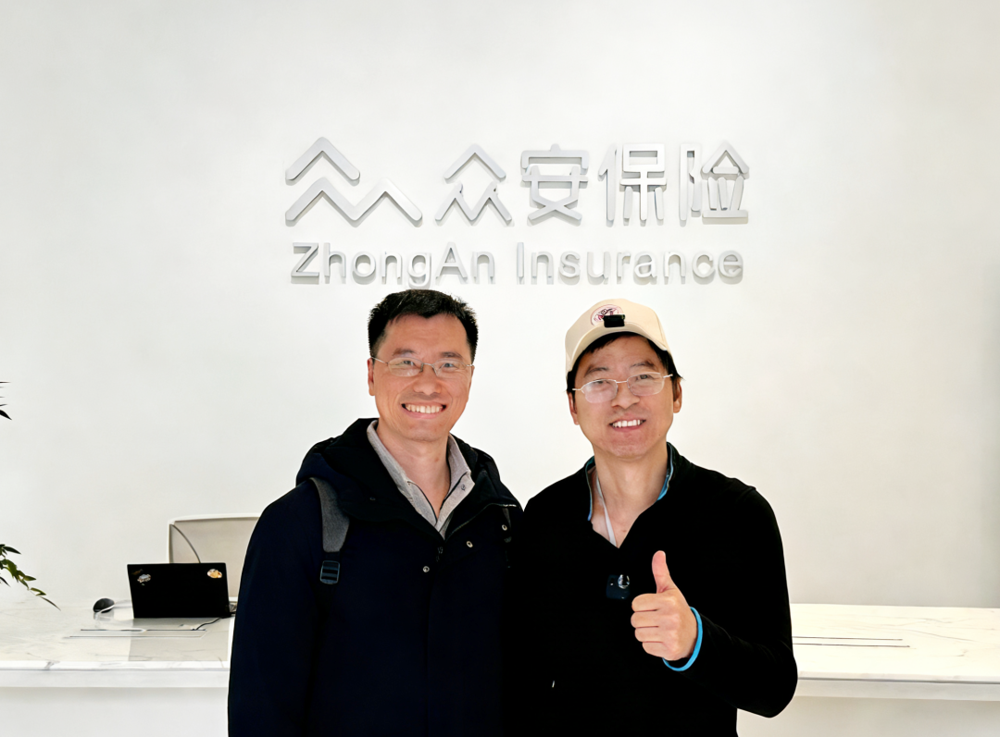

众安保险理赔争议大？上海实地专访，扒出最核心真相
买保险最让人扎心的是什么？答案无疑是“出险后遭遇拒赔”！从行业整体来看，拒赔案件虽占极小比例，但架不住客户基数庞大，再小的比例也会催生不少纠纷。就像咱们今天要聊的众安保险——这家健康险热销多年的企业，保费规模早已跻身行业前三，可与此同时，关于众安保险的理赔非议，近几年也多渐渐多了起来。
为了帮大家摸清真相，1月27日我和老搭档郑老师特意奔赴上海，实地探访了众安保险，与理赔相关负责人进行面对面沟通，重点聚焦大家最关心的“理赔争议”问题。整场交流没有套话、不绕弯子，今天就把最核心的信息分享给大家：
先给大家透个底：众安这次的态度，远比我预想中坦诚——不回避问题、不推诿责任，既坚守保险条款的底线，也没忽视客户的合理诉求，这一点值得先点个赞。
聊到理赔处理的核心原则，众安的负责人说得很明确：“我们理赔的唯一依据，就是保险合同条款，必须做到有规可依，既不能随意赔付，也不会随便拒赔。” 这一点其实不难理解，毕竟保险不是慈善事业，条款是双方约定的底线，若是无底线赔付，最终损害的还是所有投保人的共同利益。
但大家最关心的是：理赔决定通知书是否“一锤定音”，完全没有复议空间？实际上不是的，有不少案件，只要客户提出合理诉求，众安都会给出正常赔付或协商赔付等处理结果。负责人坦言，“基层理赔人员确实存在风险规避心理，怕出错会先作拒赔处理，但只要有充分的医学依据，符合条款的本意，我们一定会通过内部协调，找到更人性化的解决方案。”他还提到，众安内部设有“多部门合议”的纠错机制。比如近期就一起脊索瘤被基层理赔岗拒赔的案件，客户提交了有理有据的申诉材料后，众安多个部门复议认为，虽然该病属于先天性疾病，但其ICD-10编码并不在合同约定的先天性畸形/变形范畴内，因此严格按照条款纠正此前的错误决定，给予客户正常赔付。不难看出，众安在理赔复议上确实留足了“情理空间”。
另外，我专门咨询了关于超适应症用药的理赔原则。负责人表示，这类费用显然不符合合同条款的，一线理赔员通常会先作出拒赔处理，但如果有充分的循证医学证据证明该费用合理且必要，众安也会对这部分费用进行赔付考量。
更难得的是，众安没有回避自己的短板，主动承认了目前理赔处理中存在的问题——这也是咱们投保人最常吐槽的点：不同来源的申诉缺少统一处理标准，部分申诉请求难以得到足够重视，重大案件缺乏明确的合议机制。面对这些问题，众安已经在规划具体的优化举措，让我们一同期待。
除了复议机制方面的优化，众安在理赔争议案件的续保审核方面也作出了调整。众安认为，申诉是客户的权利，对于进行正常申诉的客户，后续续保审核将会比以往更加宽容，不会因为客户有过申诉记录就拒绝其续保。这一点尤为重要，能有效避免大家“申诉一次，丢了后续保障”的顾虑。
作为深耕保险领域多年的博主，我一直觉得，保险公司对待理赔争议的态度和处理机制，比单纯的“赔不赔”更值得关注——不怕有问题，就怕回避问题、不解决问题。这次探访众安，最直观的感受就是，他们在理赔争议上并非坊间传闻那般“冷面无情”。众安在理赔尺度上有清晰的定位，既严格执行条款，又保留了灵活的处理方式。作为互联网企业，他们没有传统保险公司的诸多条条框框，也不会出现“理赔部门认为该赔但不敢赔”的束缚。
对于这次众安专访披露的信息，你们有什么看法？欢迎在评论区分享你意见。
——End——
我是任巍巍，
中山大学工商管理硕士，
大家可以信任的11年资深保险顾问。
帮大家解决怎么买保险问题，
帮大家解决保险拒赔问题。
有求助或者交流可以扫码加任老师的微信

本文由 ShawnCH（何智翔）轉發，透過微信聊天記錄自動提取並整理。 原文連結：https://mp.weixin.qq.com/s?__biz=MzUxNzM5MzQwNg==&mid=2247485060&idx=1&sn=56d8549a230c4751b2e9f540637343fa&chksm=f887a7d65d4987cd5799873a0068f9182ed8a88fa09c5e4529f0191370baf47a4ced469c46be&mpshare=1&scene=1&srcid=0202vuF6Iif10fkkVDL9quvD&sharer_shareinfo=46618f137134bac5fd20c090c6accc4a&sharer_shareinfo_first=46618f137134bac5fd20c090c6accc4a#rd